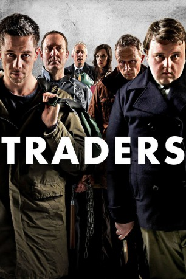

gesehen am 10.07.2017
gesehen am 10.07.2017Alternativ: Traders gesehen am 10.07.2017
 
 IMDB-Wertung: 6.2 / 10
IMDB-Wertung: 6.2 / 10  Metascore:
Metascore: 
Der Banker Harry Fox (Kilian Scott) könnte sich nicht glücklicher schätzen, hat er doch ein luxuriöses Apartment, einen heißen Schlitten und alles, was sein Herz noch so begehrt. Doch damit ist plötzlich Schluss, als seine Firma den Bach heruntergeht. Nun braucht er dringend Geld. Da kommt ihm die Idee seines Ex-Kollegen Vernon (John Bradley) gerade recht: Der erfindet ein blutiges Geschäftsmodell, bei dem jede Menge Bares den Besitzer wechselt. Der Haken daran: Einen der beiden Mitstreiter kostet es das Leben. Zwei Teilnehmer treffen sich an einem geheimen Ort und lassen sich auf einen Kampf um Leben und Tod ein. Als Wetteinsatz winkt der gesamte Besitz des Gegners – vorausgesetzt, man bringt ihn unter die Erde. Das tödliche Spiel schlägt ein und Harry wird schnell zum Shootingstar. Mit dem Erfolg steigt auch die Gier nach mehr und bei Vernon werden Neid und Missgunst laut. In dieser zunehmenden Spirale der Gewalt werden aus einstigen Freunden erbitterte Feinde…
Jahr: 2015
Dauer: 90 Minuten
FSK: 18
Land: Irland Studio: Sunfilm EntertainmentTonspuren: DTS - ,
Untertitel: Deutsch,
Auflösung: 1080p (1920x1080) Größe: 7434 MB
Genre: Thriller
Regisseur: Rachael Moriarty, Peter Murphy
Drehbuch: Rachael Moriarty
Soundtrack:
Darsteller:
 Killian Scott als Harry Fox
Killian Scott als Harry Fox Peter O'Meara als Anthony Grogan
Peter O'Meara als Anthony Grogan Barry Keoghan als Ken
Barry Keoghan als KenDatei: X:\FSK18-2015\Fighting Game$ (2015, FSK18, 1920x1080).mkv seit 07.07.2017
Festplatte: FSK18
 Es gibt insgesamt 23 Filme in der Gruppe 'FSK18-2015'
Es gibt insgesamt 23 Filme in der Gruppe 'FSK18-2015'